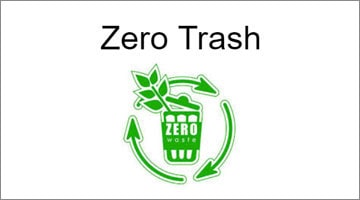
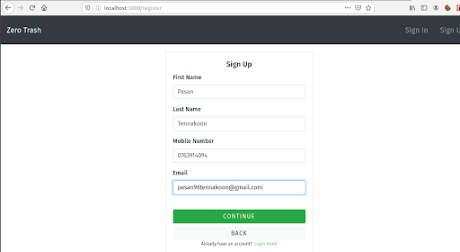
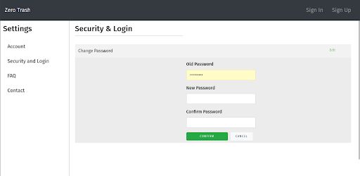
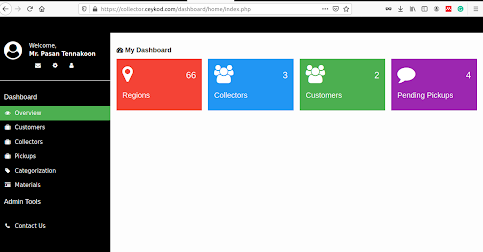
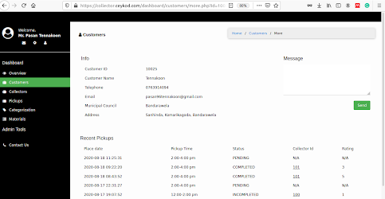
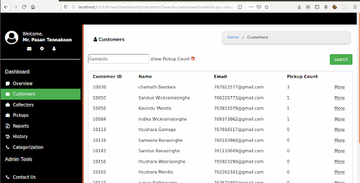

Dilshani Karunarathna
Dilshani Karunarathna
Zero Trash
In today’s increasingly congested world, it is difficult to imagine the absence of waste. Waste
generation levels are rising. In 2019 alone, the world’s cities produced 2 billion tons of solid
waste. With increasing urbanization and population growth, annual waste generation is expected
to grow by 70% in 2050.
Although richer nations like the U.S.A and Japan produce more waste than countries like Sri
Lanka, the problems of waste management are different in the developing world. Unlike developed
nations, we do not have a well-organized means of controlling waste. Garbage is rarely collected
on a regular basis, as municipalities are often underfunded. The lack of status and poor
salaries associated with the job of garbage collection also creates a system where employees are
not trained or able to manage an effective system.
Sri Lanka generates 7000 Metric tons of waste per day, with the Western Province accounting for
60% of that statistic. However, only half of that waste is actually collected. We believe in
technology to solve this growing problem. Project Zero Trash is a web application designed to
automate the garbage collection system in Sri Lanka. Zero Trash aims to build a waste collection
system while creating a circular economy in the community. Zero trash provides two front ends.
One for individual households and another for garbage collectors. Customers who registered in
the system can place pickups when there is a pile of garbage they want to get rid of. Zero Trash
will distribute these pickups among its garbage collectors. Collectors will be notified of these
pickups by the web application. For those who do not have the facilities of a smartphone, there
is an SMS notification system provided by a telco application.
Zero Trash provides a communication platform between its users and garbage collectors which did
not exist (at least not successfully) in Sri Lanka. This could have huge implications for both
lessening the cost of collecting garbage and aiding in the recycling process, as well as
ensuring that materials that would otherwise end up in a landfill are transported to the
appropriate recycling centers. This will increase the income for garbage collectors while
providing householders with an additional income.
Gallery
    Team
Dilshani Karunarathna
 Nuwan Jaliyagoda
Nuwan Jaliyagoda
 Pasan Tennakoon
Pasan Tennakoon